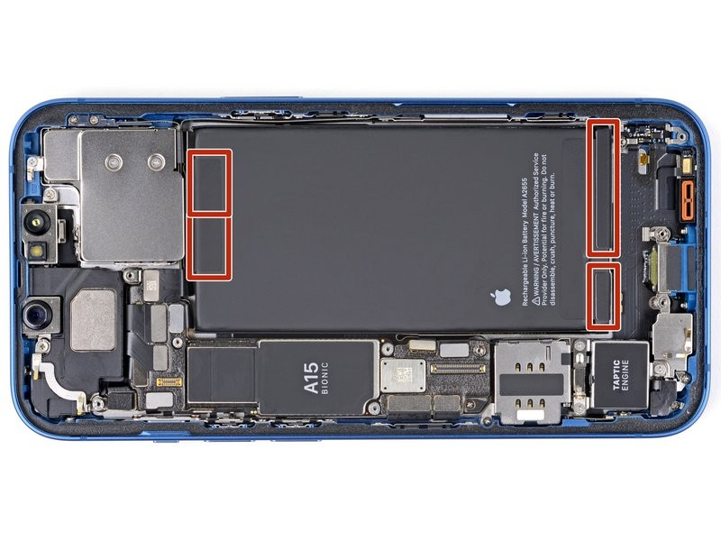
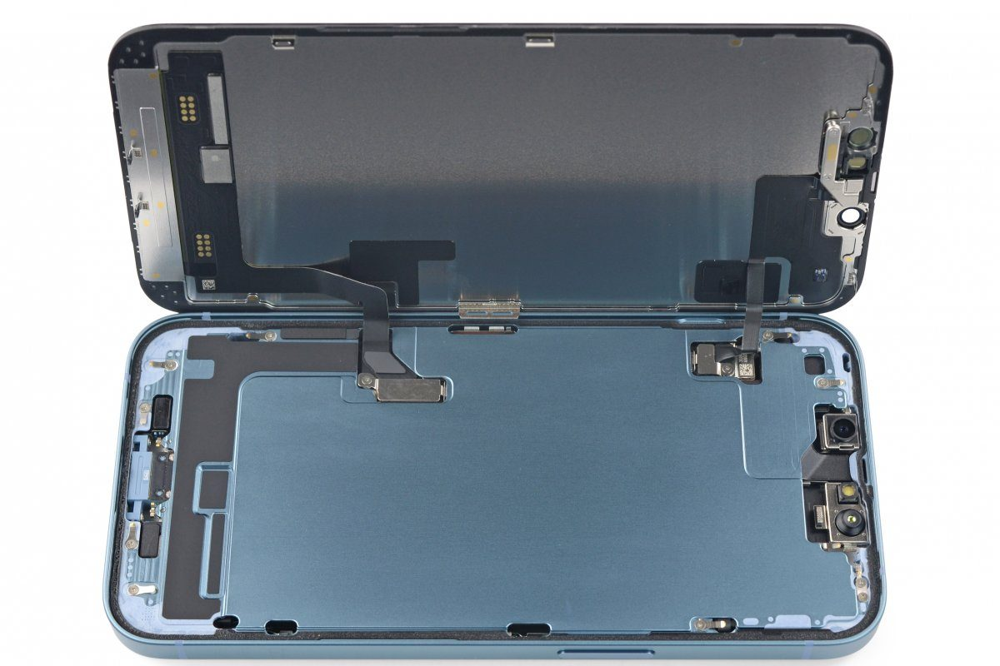
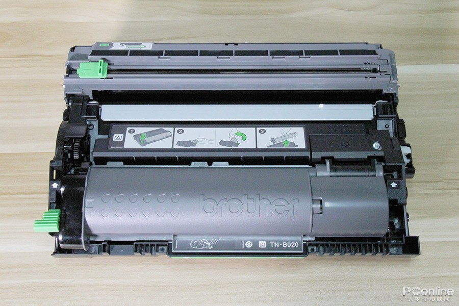
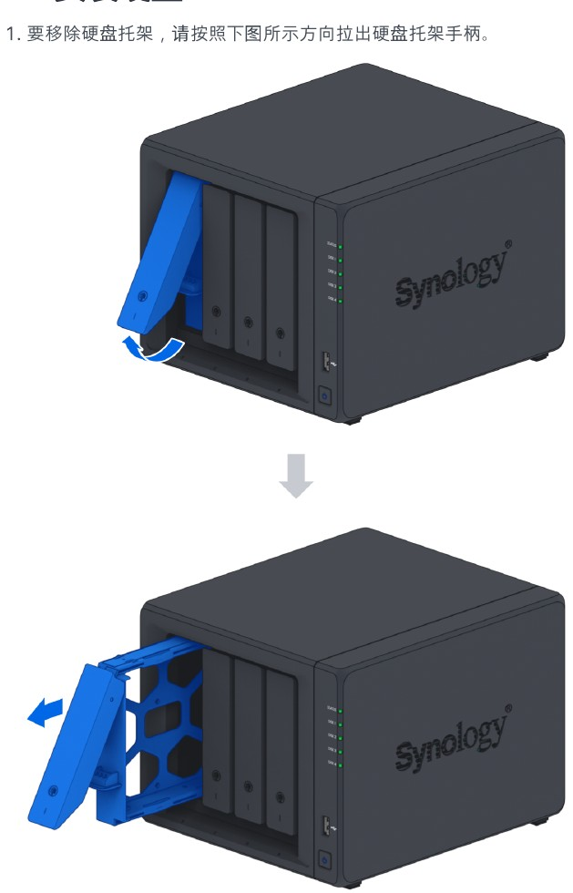
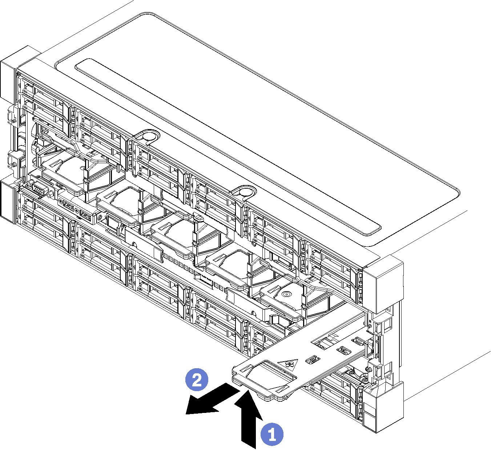

06
拆解与可维修
整机拆解分析、模块化、可维修设计，以及值得警惕的反面案例。 本类共 23 篇。
磁吸定位 1 篇

用户可更换构建面 1 篇
可维修设计 10 篇

Fairphone 5 卡扣后盖与免胶可换电池
Fairphone 5 的后盖只靠一圈卡扣扣在机身上，用指甲从右下角缺口撬开即可取下；电池不粘胶，抠起底边拉片就能拿出；屏幕用 8 颗 3.9 mm 螺丝 + 一个压接连接器固定——在保持 IP55 的同时做到 iFixit 10/10 可维修分。

Fairphone 6 螺丝模块化（屏、电池、摄像头、USB-C）
Fairphone 6 仍然走「可拆、可换模块」路线，但和已收录的 Fairphone 5 不一样：后盖改成「两颗更长的 T5 螺丝 + 向下滑开的下后盖」，电池改成更薄的软包，用螺丝压住（不再只靠指甲和拉片）。屏幕八颗银螺丝、免胶；USB-C 藏在扬声器模块下面，摄像头也可单独更换。代价是防护停留在 IP55，换电池不再是完全免工具。

Framework Laptop 16 Expansion Bay 滑出式显卡模块
Framework Laptop 16 在机身后方做了一条贯穿式的 Expansion Bay：松开中板上的 Interposer 和两颗防丢 T5 螺丝后，整块显卡模块（或空壳）可以从机身尾部平推出来。这和已经收录的 Framework 13 侧边 Expansion Card（把 USB-C 转成 HDMI / USB-A 的小卡）不是同一件事——16 寸两边仍然可以插扩展卡，Bay 则是用来换独显或空仓的大滑块。

Framework 笔记本模块化扩展卡与磁吸边框
Framework 13 用 5 颗防丢 Torx 螺丝开底壳、磁吸键盘组件、磁吸屏幕边框、按键弹出的扩展卡（把 USB-C 转成 HDMI/USB-A 等）和 3 颗防丢螺丝的电池，拿到 iFixit 罕见的 10/10 可维修分。

HMD Skyline 螺杆凸轮顶开后盖与塑料衬膜取电池
HMD Skyline 在底边用一颗 T3 螺丝驱动内部旋转臂，凸轮凸起顶在后盖板上把一角顶开，再沿周边解开卡扣和轻度背胶；电池则靠内置塑料衬膜向上拉开，而不用沿长度拉伸的拉片胶。

ThinkPad T480 整张键盘作为可选服务 CRU：两颗螺丝滑出后拔排线
ThinkPad T480 把整张键盘当作客户可更换部件：从底面拧松两颗固定螺丝，在键面把键盘推向屏幕方向以松开边框里的固定栓，翻起后再拔掉背面的排线，无需拆每一颗键帽机构。

Valve Steam Deck OLED 可维修改版：金属螺纹柱、T6 Torx 与电池撬卡槽
Steam Deck OLED 是一个难得的「代际可维修改版」样本。Valve 官方改动清单写明：后壳螺丝全部改 Torx，并**拧进金属螺纹**（LCD 版是塑料螺纹，反复拆装会滑牙）；减少螺丝种类和常见维修步数；肩键开关从按键小板移到摇杆板；换屏不再需要拆后盖。iFixit 实拆补充：后盖 8 颗 T6 Torx、长 5.8 mm；板间排线从主板底下挪到电池和主板上方，不再在装散热罩时被压伤；电池仍用 4 条强力背胶，但中框底边开了两个撬卡槽。iFixit 可维修评分从 LCD 版的 7/10 升到 9/10。

拉伸释放电池胶：沿长度方向拉出颈缩失粘，避免弯折电芯
把高伸长、高内聚强度的压敏胶带夹在电池和壳体之间，维修时沿长度方向以低速、小角度拉开，胶带被拉长变薄后从界面脱开，从而在尽量不撬、不弯折电芯的前提下取出电池。

苹果 iPhone 14 双面可开：中框承力与前后两道密封
iPhone X 到 13 的后盖玻璃胶得极牢，还焊着镜头装饰圈，换后盖几乎要拆光整机、用激光烧胶再刮碎玻璃。iPhone 14（标准版）改了内部架构：**屏幕后面加了一块金属中框，所有内部元件装在中框上**，于是屏幕可以从正面打开，后盖可以从背面打开；**拧下充电口两侧同样两颗 6.8 mm 五星螺丝，前后都能开**，后盖只靠这两颗螺丝、一个排线连接器和较弱的背胶固定。代价是密封周长约翻倍，还需要 10 个 EMI 簧片接触后盖来替代原来的焊接接地。iFixit 把它的可维修评分提到 7/10，是 iPhone 7 之后给 iPhone 的最高分。

苹果 iPhone 16 电解脱粘电池胶
iPhone 16/16 Plus 不再用易脆的拉胶条固定电池，而是用一种通电即脱粘的胶：把电池底边的银色导电片接正极、机内接地螺丝接负极，加 9 V 约 90 秒，胶与铝中框的界面被电化学「氧化脱开」，电池即可无力取出——把「胶粘」从不可维修变成可重复、可预期的拆卸工艺。
模块化设计 6 篇
Fairphone 5 卡扣后盖与免胶可换电池
Fairphone 5 的后盖只靠一圈卡扣扣在机身上，用指甲从右下角缺口撬开即可取下；电池不粘胶，抠起底边拉片就能拿出；屏幕用 8 颗 3.9 mm 螺丝 + 一个压接连接器固定——在保持 IP55 的同时做到 iFixit 10/10 可维修分。
Fairphone 6 螺丝模块化（屏、电池、摄像头、USB-C）
Fairphone 6 仍然走「可拆、可换模块」路线，但和已收录的 Fairphone 5 不一样：后盖改成「两颗更长的 T5 螺丝 + 向下滑开的下后盖」，电池改成更薄的软包，用螺丝压住（不再只靠指甲和拉片）。屏幕八颗银螺丝、免胶；USB-C 藏在扬声器模块下面，摄像头也可单独更换。代价是防护停留在 IP55，换电池不再是完全免工具。

Framework Desktop 免工具面板与标准件模块化
Framework 把笔记本那套「可修、可升级」搬到桌上：侧板靠卡扣上滑就能取下，顶板用带 D 形拉环的手拧螺丝，风扇是标准 120 mm，存储是标准 M.2，主板按 Mini-ITX 出售、可以装进别的机箱。和 Framework 笔记本不同的是，这台为了 256-bit 内存总线的信号完整性，把内存焊死在了主板上——官方把原因说得很清楚，而不是假装「全部都能插拔」。
Framework Laptop 16 Expansion Bay 滑出式显卡模块
Framework Laptop 16 在机身后方做了一条贯穿式的 Expansion Bay：松开中板上的 Interposer 和两颗防丢 T5 螺丝后，整块显卡模块（或空壳）可以从机身尾部平推出来。这和已经收录的 Framework 13 侧边 Expansion Card（把 USB-C 转成 HDMI / USB-A 的小卡）不是同一件事——16 寸两边仍然可以插扩展卡，Bay 则是用来换独显或空仓的大滑块。
Framework 笔记本模块化扩展卡与磁吸边框
Framework 13 用 5 颗防丢 Torx 螺丝开底壳、磁吸键盘组件、磁吸屏幕边框、按键弹出的扩展卡（把 USB-C 转成 HDMI/USB-A 等）和 3 颗防丢螺丝的电池，拿到 iFixit 罕见的 10/10 可维修分。
ThinkPad T480 整张键盘作为可选服务 CRU：两颗螺丝滑出后拔排线
ThinkPad T480 把整张键盘当作客户可更换部件：从底面拧松两颗固定螺丝，在键面把键盘推向屏幕方向以松开边框里的固定栓，翻起后再拔掉背面的排线，无需拆每一颗键帽机构。
整机架构 2 篇
Framework Desktop 免工具面板与标准件模块化
Framework 把笔记本那套「可修、可升级」搬到桌上：侧板靠卡扣上滑就能取下，顶板用带 D 形拉环的手拧螺丝，风扇是标准 120 mm，存储是标准 M.2，主板按 Mini-ITX 出售、可以装进别的机箱。和 Framework 笔记本不同的是，这台为了 256-bit 内存总线的信号完整性，把内存焊死在了主板上——官方把原因说得很清楚，而不是假装「全部都能插拔」。
苹果 iPhone 14 双面可开：中框承力与前后两道密封
iPhone X 到 13 的后盖玻璃胶得极牢，还焊着镜头装饰圈，换后盖几乎要拆光整机、用激光烧胶再刮碎玻璃。iPhone 14（标准版）改了内部架构：**屏幕后面加了一块金属中框，所有内部元件装在中框上**，于是屏幕可以从正面打开，后盖可以从背面打开；**拧下充电口两侧同样两颗 6.8 mm 五星螺丝，前后都能开**，后盖只靠这两颗螺丝、一个排线连接器和较弱的背胶固定。代价是密封周长约翻倍，还需要 10 个 EMI 簧片接触后盖来替代原来的焊接接地。iFixit 把它的可维修评分提到 7/10，是 iPhone 7 之后给 iPhone 的最高分。
拆解分析 1 篇
胶粘封装 4 篇
Valve Steam Deck OLED 可维修改版：金属螺纹柱、T6 Torx 与电池撬卡槽
Steam Deck OLED 是一个难得的「代际可维修改版」样本。Valve 官方改动清单写明：后壳螺丝全部改 Torx，并**拧进金属螺纹**（LCD 版是塑料螺纹，反复拆装会滑牙）；减少螺丝种类和常见维修步数；肩键开关从按键小板移到摇杆板；换屏不再需要拆后盖。iFixit 实拆补充：后盖 8 颗 T6 Torx、长 5.8 mm；板间排线从主板底下挪到电池和主板上方，不再在装散热罩时被压伤；电池仍用 4 条强力背胶，但中框底边开了两个撬卡槽。iFixit 可维修评分从 LCD 版的 7/10 升到 9/10。
拉伸释放电池胶：沿长度方向拉出颈缩失粘，避免弯折电芯
把高伸长、高内聚强度的压敏胶带夹在电池和壳体之间，维修时沿长度方向以低速、小角度拉开，胶带被拉长变薄后从界面脱开，从而在尽量不撬、不弯折电芯的前提下取出电池。

苹果 AirPods Pro 全胶粘封装（反面案例）
AirPods Pro 耳机体内用一圈耐酒精的白色橡胶状胶把纽扣电池「包」起来，电池再用焊接线连接；杆部只能用超声波切割才能打开——0/10 的可维修分，是微型化与可维修冲突的典型。
苹果 iPhone 16 电解脱粘电池胶
iPhone 16/16 Plus 不再用易脆的拉胶条固定电池，而是用一种通电即脱粘的胶：把电池底边的银色导电片接正极、机内接地螺丝接负极，加 9 V 约 90 秒，胶与铝中框的界面被电化学「氧化脱开」，电池即可无力取出——把「胶粘」从不可维修变成可重复、可预期的拆卸工艺。
可更换能源模块 1 篇
车架导轨 1 篇
用户可更换耗材 2 篇

喷墨用户可更换维护箱：抽换定位、端子禁触与盖板锁紧
喷墨机把废墨收集做成用户可抽出更换的维护箱（佳能称保养墨盒）：盒上有电气端子和开口，插入时靠平直推入直到卡入到位，外面再用盖板挡住。佳能 G3020 的 MC-G02 用螺丝固定带圆孔的盖，取出时先拉到止位再略提起；爱普生 L436X 的 T04D1 则免螺丝，盖子向右推出，靠盒上的三角标志定向插入。满了不换，打印机就会停机。

鼓粉分离：感光鼓与碳粉仓分件更换（对照传统鼓粉一体）
鼓粉分离把感光鼓单元和碳粉仓做成两个可分别更换的模块：粉用尽只换粉仓，鼓的寿命到了再换鼓。兄弟把粉仓卡入硒鼓单元，用绿色锁定杆解锁后再整组推回机前耗材舱；佳能 LBP913 则把墨粉盒与感光鼓做成两条独立插槽，按与插槽相同的角度分别抽出。中关村在线把对照写得很清楚：传统鼓粉一体是换粉时连感光鼓一起换，所以更换成本更高。
维护箱 1 篇
用户可拆模块 1 篇

冲煮器 1 篇
用户可拆维护模块 1 篇
尘筒与滤芯 1 篇
机柜导轨 1 篇

免工具安装 1 篇
整机维护 1 篇
热插拔模块 3 篇

热插拔服务器电源：释放闩锁加手柄抽出、盲插连接器对接
热插拔服务器电源是一只独立模块：前端有手柄和释放闩锁，后端是对着电源背板的盲插连接器。按住闩锁、拉手柄就能把模块从槽里抽出；推入到位后闩锁咔嗒锁住，交流线再接到模块面板上的进线口。在来源写明的冗余条件下，系统可以靠另一只电源继续运行。它和硬盘托架都是「前面操作、后面盲插」，但连接器、保持锁和允许带载拔插的条件都不一样，不能把两套步骤混用。

热插拔硬盘托架：前手柄锁止、托盘滑入并把接口盲插到背板
热插拔硬盘不是把裸盘塞进机箱，而是先把硬盘固定在带前手柄的托架里，再沿导轨把整只托盘推入，让硬盘接口对上机箱里的背板或中面板连接器；合上手柄把托盘留在位。这样可以在设备带电时抽出、换入硬盘。它和 Nano-SIM 针顶出托盘（Pin-eject）：外部顶针把客户自制托盘顶出 不同：这里没有外针顶出，对接的是机内背板，并且只有来源写明支持热插拔的机型才允许带电更换。

热插拔风扇模块：快拆手柄或凸轮把手与运行中更换
热插拔风扇把风扇做成带导向的独立模块，用免工具手柄或凸轮把手保持在机箱里，电连接随模块插拔一起完成。设备可以在运行时更换故障风扇，但来源各自规定了必须装回的时间，超时会过热甚至关机。它和热插拔电源一样是「按锁、抽模块」，可是运载的是冷却气流，锁的形式和允许空槽的时限都不能从电源篇照抄。